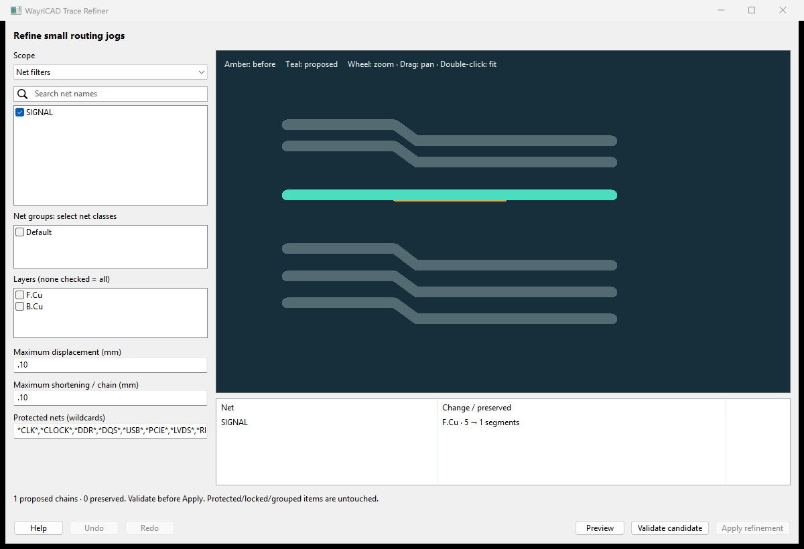
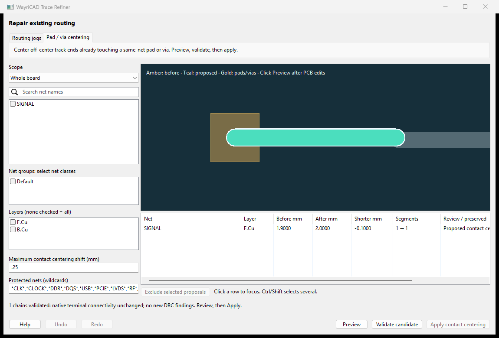
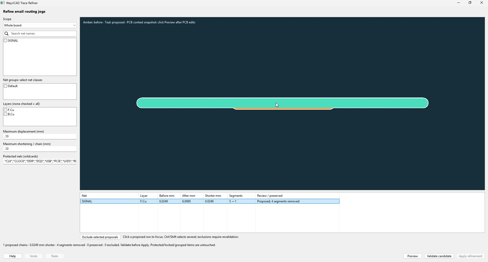

Review and remove small routing jogs and redundant straight segments in KiCad 10.
Trace Refiner adjusts existing straight tracks. Preview shows a proposal; native connectivity and DRC must approve it before Apply. It does not route missing connections, tune lengths or establish signal integrity.
.kicad_pro and, when present, .kicad_dru.
Closing this window discards its operation history. Ordinary PCB Editor Undo is not claimed. Keep a saved reference for comparison beyond this session.
Choose the separate Pad / via centering tab, select a scope and click Preview. This mode centers eligible straight-track ends already touching one same-net pad or via on the same copper layer. Pads, vias, widths and layers remain fixed. The initial movement limit is 0.25 mm; the permitted range is greater than zero and at most 2 mm. Jog displacement and shortening bounds belong to the other tab.
Review amber originals and teal proposals, click Validate candidate, then Apply contact centering. Native connectivity and before/after DRC remain mandatory. Undo/Redo is available in this window. Ambiguous terminals, branch/interior contacts, locked/grouped/protected routing, offset/custom pads and actual gaps are preserved. This is not a missing-net router; a DRC finding may need another repair.
Validation enables KiCad's Track endpoint not centered on via check in disposable centering copies and requires the reviewed warning to disappear. Matching project/custom rules are retained when saving those validation copies. Detected tuning meanders remain protected.
Centering can increase length. Negative Shorter mm values mean length was added. Switching tabs or editing settings clears validation and requires a fresh preview.
python -m trace_refiner_plugin C:/Projects/Example/board.kicad_pcb --center-contacts --net SIGNAL --max-center-shift 0.25 --output C:/Projects/Example/review/centered.kicad_pcb

| Scope | Included routing |
|---|---|
| Selected tracks | Selected straight tracks. Selection boundaries remain fixed. |
| Selected nets | Nets of selected tracks, vias, pads or footprints. |
| Whole board | All eligible straight tracks on permitted copper layers. |
| Net filters | Checked exact net names. Searching narrows the displayed list while retaining checked choices. |
| Net groups | Checked native net classes, rather than KiCad component groups. |
Layer filters apply to every scope. No checked layers means all enabled copper layers. Checklist names are literal, including bus brackets such as DATA[0]; protected-net entries use comma-separated wildcards.
Maximum displacement bounds centreline distance in both directions. Every original portion must remain near the replacement and every replacement portion near the original. The complete candidate is checked again after rounding to KiCad coordinates. A 0.03 mm jog can fit a 0.05 mm bound, whereas a 0.005 mm bound preserves it. Larger settings permit more movement but do not guarantee a proposal.
Maximum shortening / chain bounds total length removed from each connected eligible chain, including all its local cleanup windows. It is an absolute distance, not a percentage or board-wide allowance. Independent chains can each shorten by up to the setting. Replacements do not deliberately add length; numerical equality uses a sub-nanometre tolerance.
A chain has the same net, layer and width. Small local windows can become a straight segment or a single bend with horizontal, vertical or 45-degree legs. Larger necessary turns remain. Exact collinear subdivisions may disappear without visible displacement. Eligible chains up to 2,048 segments are supported. Exact collinear fragmentation is collapsed before local window search; longer chains, loops and exhausted budgets remain unchanged. Mask-opening and local mask-margin changes are chain boundaries.
An empty preview is valid: the route may already be simple, protected, outside scope or beyond the bounded geometry proof. Preservation notices describe encountered conditions; they do not count every excluded track. Changing controls clears the preview. Geometry, relevant selection, live rule dimensions/net classes or saved rule changes invalidate source-bound operations.
The table lists original/proposed lengths, shortening in mm and segment counts. Click a proposed row to focus and highlight it in the cached viewport without changing PCB selection. Hover for full net names and preservation reasons. Multi-select proposal rows and click Exclude selected to retain their original copper. Preserved notices are not proposals. Every subset edit clears validation evidence and disables Apply; validate the retained subset again. Excluding everything produces an empty preview and no edits.
Native validation is bound to exact geometry/settings. A modified proposal, replacement object or originating board cannot reuse approval. Native calls that mutate and then fail are recovered against their pre-write membership, or explicitly report a recovery failure.
_P, _N, + or -, and discovered P/N counterparts including numbered names, are protected. Default wildcards cover common clock, DDR, USB, PCIe, LVDS, RF and CAN names.There is no shove routing, via movement, pair retuning or clearance relaxation. Geometric similarity does not establish timing, impedance, reference-plane continuity, fabrication acceptance or electrical performance. Necessary detours remain when no accepted cleanup exists.
The live board is serialized for a disposable worker. Matching saved project/rule files accompany the snapshots. Live scalar Board Setup dimensions and effective net classes are compared with the saved context; save intended settings before validating. Source/rule identity is checked again before acceptance and Apply.
Native pad/via/zone connected-component membership must remain unchanged. Baseline and candidate DRC runs refill zones. Core copper collision/dimension checks are enabled in disposable project copies even if disabled in saved settings; the source project remains unchanged.
These are acceptance gates for reviewed geometry and saved rule context, not general board qualification. Inspect the final board and rerun native DRC after zone refill. Windows/KiCad 10.0.6 is the native validation target; Linux/macOS GUI and KiCad 11 remain unverified.
Run the module with KiCad's native Python supplying pcbnew, from the source checkout or an environment containing the package. It reads the saved PCB and excludes unsaved editor changes. PCM installation does not create a system-wide console command.
python -m trace_refiner_plugin C:/Projects/Example/board.kicad_pcb --net SIGNAL --layer F.Cu --report C:/Projects/Example/review.jsonThe default operation prints a JSON preview to stdout; --report FILE also saves it to a new file; existing reports are not overwritten. A preview report is not DRC approval. Add --validate to check the proposal without writing a PCB:
python -m trace_refiner_plugin C:/Projects/Example/board.kicad_pcb --net SIGNAL --validateExport requires successful validation and a new destination. Create the destination directory before running:
python -m trace_refiner_plugin C:/Projects/Example/board.kicad_pcb --net SIGNAL --output C:/Projects/Example/review/refined.kicad_pcbThe source files remain unchanged. Matching project/custom-rule copies use the new board stem; existing output files are not overwritten. Open the exported project, inspect it, refill zones and run final DRC before adopting it. CLI export has no in-window Undo history.
| Argument | Purpose |
|---|---|
--net EXACT | Exact case-sensitive net name; repeat for several. Bus brackets are literal. |
--netclass NAME | Native net class; repeat for several classes. |
--track UUID | Native straight-track UUID; repeat for several tracks. |
--layer NAME | Copper layer such as F.Cu; repeat for several layers. |
--max-deviation MM | Bidirectional centreline displacement; default 0.10 mm. |
--max-shortening MM | Total shortening per chain; default 0.10 mm. |
--protected GLOBS | Replaces the default protected wildcards. Include every default protection you intend to retain; quote values such as '*CLK*,*DDR*,ANALOG_*' in the shell. |
--validate | Validate without writing a new board. |
--output NEW.kicad_pcb | Validate and export a separate board/project. |
--report FILE | Save the JSON report to a new file in an existing directory, as well as printing it. |
--help | Show installed usage. |
Choose one selector family: net, net class or track. Do not combine families; repeat values within one family. With no selector, eligible whole-board routing is considered. Layers and protection apply in every scope. Differential-pair protection still applies to explicitly selected items.
The installed wayricad-trace-refiner entry point accepts the same arguments in an environment with native KiCad bindings. Validation/export requires the matching saved .kicad_pro, optional .kicad_dru and matching kicad-cli. See the README for a Windows native-Python invocation and installation.
| Symptom | Next action |
|---|---|
| No proposals | Check scope, selection, layer names and protection. Try one known small jog; already-simple or complex protected routing may stay unchanged. |
| Board/rules changed | Save intended board/settings, then preview and validate again. |
| Live Board Setup differs | Save Board Setup and matching project settings before creating a new preview. |
| Baseline chain has findings | Fix that chain or choose clean routing. Existing errors do not authorize moving it. |
| 199 or more findings of one type | Resolve the excessive baseline. Equal totals cannot establish no new findings. |
| New DRC/connectivity findings | Keep the original. Reduce displacement or scope and validate again; do not disable checks to force approval. |
| Custom length/skew/pair constraint | Use native routing/tuning. Removing the rule does not establish safe timing. |
| Runtime/worker/CLI unavailable | Use matching KiCad 10 native Python and CLI. Restart PCB Editor after installation. |
| Cancelled, timed out or crashed validation | Apply remains blocked and the live PCB unchanged. Address the runtime issue or retry a smaller scope. |
| Export destination exists | Choose a new stem or directory; existing files are preserved. |
| Undo/Redo blocked | The board no longer matches that transaction. Inspect it and use a saved reference if needed; do not force old objects into changed routing. |
Object exchanges recover on failure. If a message explicitly says recovery needs inspection, inspect the current board before continuing or saving; do not assume that operation completed.
Source 0.2.0 uses in-memory board fingerprints and spatial native-contact indexes. Geometry checks and DRC gates remain conservative. See the full guide for current candidate installation and recorded test results.

Choose Overlay, Before, After or Side by side. Amber is original routing and teal is proposed routing. Overlay adds a wider amber comparison outline to keep coincident routes visible; it does not change copper width. Switching comparison views retains the proposal and validation, and uses cached geometry.